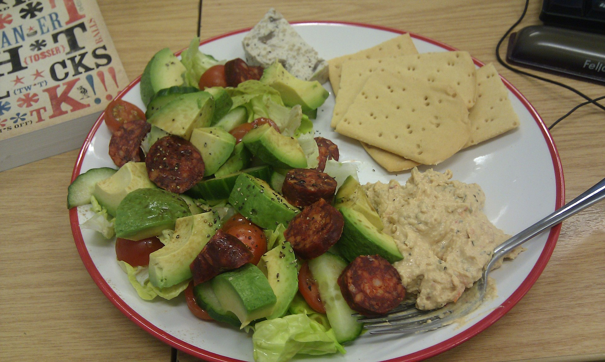

Draft only · noindex,nofollow · PL/EN · P1/P2 remediated
Talerz dla osoby siedzącej
Lead PL: Talerz dla osoby siedzącej: dopasowanie talerza do dnia przy biurku bez schodzenia do głodowych porcji. Ten szkic ma pomóc czytelnikowi podjąć kilka małych decyzji w zwykłym tygodniu, bez obietnic leczenia, bez straszenia i bez planu, którego nie da się utrzymać przy pracy, rodzinie albo podróży.

Najważniejsze wnioski
- Najpierw nazwij sytuację: dopasowanie porcji do dnia z małą aktywnością bez schodzenia do głodowych ilości.
- Pierwszy krok to: zostaw podobną strukturę posiłku, ale zwiększ udział warzyw i pilnuj białka, zamiast usuwać całe węglowodany.
- W praktyce oprzyj posiłki o: warzywa świeże lub mrożone, pełniejsze zboża, ziemniaki, jajka, nabiał, tofu, ryby, chude mięso, strączki i oliwa.
- Nie idź w skrót: pułapką jest mały lunch bez sytości, który uruchamia większe podjadanie wieczorem.
Po co ten temat
Talerz dla osoby siedzącej dotyczy przede wszystkim sytuacji: dopasowanie porcji do dnia z małą aktywnością bez schodzenia do głodowych ilości. Najlepszy punkt wyjścia to zwykły tydzień, w którym da się powtórzyć podobne posiłki i zauważyć, co naprawdę pomaga. Artykuł nie ustawia jednej idealnej diety; porządkuje decyzje, które mają największą szansę być wykonane.
Pierwszy rozsądny krok
Pierwszy krok: zostaw podobną strukturę posiłku, ale zwiększ udział warzyw i pilnuj białka, zamiast usuwać całe węglowodany. Dzięki temu zmiana jest mierzalna i nie zamienia się w chaotyczne usuwanie produktów. Jeśli po kilku dniach nie da się jej utrzymać, warto uprościć warunki, a nie dokładać kolejne zakazy.
Co realnie położyć na talerzu
W praktyce przydadzą się: warzywa świeże lub mrożone, pełniejsze zboża, ziemniaki, jajka, nabiał, tofu, ryby, chude mięso, strączki i oliwa. Taki zestaw daje punkt zaczepienia w sklepie i w kuchni. Nie każdy element musi pojawić się codziennie; ważniejsze jest, żeby posiłek miał funkcję: sycić, ułatwiać regularność albo zmniejszać liczbę przypadkowych decyzji.
Zakupy i przygotowanie
Przy zakupach warto wybrać dwie wersje: domową i awaryjną. Domowa może być tańsza i bardziej powtarzalna, awaryjna ma ratować dzień, kiedy plan się rozsypuje. Wtedy czytelnik nie musi wybierać między perfekcją a całkowitym porzuceniem nawyku.
Najczęstsza pułapka
Najważniejsza pułapka: pułapką jest mały lunch bez sytości, który uruchamia większe podjadanie wieczorem. To szczególnie istotne w treściach zdrowotnych, bo radykalna rada często brzmi atrakcyjnie, ale nie daje lepszego monitorowania objawów ani jakości diety. Lepiej zmienić jeden element i wiedzieć, co się sprawdza.
Plan na najbliższy tydzień
przez pięć dni dodaj do lunchu jedną porcję warzyw i zaplanuj dziesięciominutowy spacer po jednym posiłku. Do obserwacji wystarczą trzy sygnały: głód lub sytość, komfort trawienia oraz łatwość powtórzenia planu. Wyniki badań, masa ciała czy objawy przewlekłe wymagają dłuższego horyzontu niż jeden weekend.
Kiedy nie działać samodzielnie
nagła zmiana masy ciała, senność po posiłkach lub objawy metaboliczne wymagają diagnostyki, nie tylko mniejszego talerza. Ten tekst jest edukacyjny i nie zastępuje diagnozy, leczenia ani indywidualnej konsultacji z lekarzem lub dietetykiem.
FAQ
Od czego zacząć przy temacie: talerz dla osoby siedzącej?
Zacznij od najprostszej obserwacji: zostaw podobną strukturę posiłku, ale zwiększ udział warzyw i pilnuj białka, zamiast usuwać całe węglowodany. Jedna zmiana daje lepszą informację niż pięć działań wprowadzonych jednocześnie.
Czy potrzebuję specjalnych produktów?
Zwykle nie. Najpierw wykorzystaj proste opcje: warzywa świeże lub mrożone, pełniejsze zboża, ziemniaki, jajka, nabiał, tofu, ryby, chude mięso, strączki i oliwa. Produkty specjalistyczne mają sens dopiero wtedy, gdy rozwiązują konkretny problem, a nie tylko wyglądają zdrowiej.
Kiedy dieta nie wystarczy?
nagła zmiana masy ciała, senność po posiłkach lub objawy metaboliczne wymagają diagnostyki, nie tylko mniejszego talerza. W takich sytuacjach dieta może być wsparciem, ale nie powinna opóźniać diagnostyki ani leczenia.
Nota bezpieczeństwa
Artykuł ma charakter edukacyjny i nie zastępuje diagnozy, leczenia ani indywidualnej konsultacji medycznej lub dietetycznej. nagła zmiana masy ciała, senność po posiłkach lub objawy metaboliczne wymagają diagnostyki, nie tylko mniejszego talerza
The plate for a sedentary person
Lead EN: The plate for a sedentary person: matching the plate to a desk-based day without shrinking meals to hunger portions. This draft helps the reader make a few small decisions in an ordinary week, without treatment promises, scare tactics or a plan that collapses around work, family or travel.
Key takeaways
- Start by naming the situation: dopasowanie porcji do dnia z małą aktywnością bez schodzenia do głodowych ilości.
- The first step is to keep the same meal structure but increase vegetables and protect protein instead of removing all carbohydrates.
- In practice, build around: fresh or frozen vegetables, higher-fibre grains, potatoes, eggs, dairy, tofu, fish, lean meat, pulses and olive oil.
- Avoid the shortcut that the trap is a tiny unsatisfying lunch that triggers more evening snacking.
Why this topic matters
The plate for a sedentary person is mainly about this situation: dopasowanie porcji do dnia z małą aktywnością bez schodzenia do głodowych ilości. The best starting point is an ordinary week in which similar meals can be repeated and patterns can be noticed. The article does not prescribe one perfect diet; it organises the decisions most likely to be carried out.
The first sensible step
The first step is to keep the same meal structure but increase vegetables and protect protein instead of removing all carbohydrates. This makes the change measurable and prevents chaotic food removal. If it cannot be maintained after a few days, simplify the conditions rather than adding more rules.
What to put on the plate
Practical options include: fresh or frozen vegetables, higher-fibre grains, potatoes, eggs, dairy, tofu, fish, lean meat, pulses and olive oil. This gives the reader a shopping and cooking anchor. Not every element must appear daily; what matters is the job of the meal: fullness, rhythm or fewer random decisions.
Shopping and preparation
For shopping, it helps to choose two versions: a home version and a backup version. The home version can be cheaper and more repeatable; the backup version saves the day when the plan falls apart. This avoids an all-or-nothing choice between perfection and abandoning the habit.
The common trap
The key trap is that the trap is a tiny unsatisfying lunch that triggers more evening snacking. This matters in health content because radical advice often sounds attractive but does not improve symptom tracking or diet quality. Changing one element gives clearer feedback.
Plan for the next week
for five days add one vegetable portion to lunch and plan a ten-minute walk after one meal. Three signals are enough to monitor: hunger or fullness, digestive comfort and whether the plan can be repeated. Lab results, body weight and chronic symptoms need a longer horizon than one weekend.
When not to handle it alone
sudden weight change, post-meal sleepiness or metabolic symptoms need assessment, not just a smaller plate. This article is educational and does not replace diagnosis, treatment or an individual consultation with a doctor or dietitian.
FAQ
Where should I start with talerz dla osoby siedzącej?
Start with the simplest observation: keep the same meal structure but increase vegetables and protect protein instead of removing all carbohydrates. One change gives clearer feedback than five actions introduced at the same time.
Do I need special products?
Usually not. Start with simple options: fresh or frozen vegetables, higher-fibre grains, potatoes, eggs, dairy, tofu, fish, lean meat, pulses and olive oil. Specialist products make sense only when they solve a specific problem, not just because they look healthier.
When is diet not enough?
sudden weight change, post-meal sleepiness or metabolic symptoms need assessment, not just a smaller plate. In such situations, diet can support care but should not delay diagnosis or treatment.
Safety note
This article is educational and does not replace diagnosis, treatment or individual medical or nutrition advice. sudden weight change, post-meal sleepiness or metabolic symptoms need assessment, not just a smaller plate